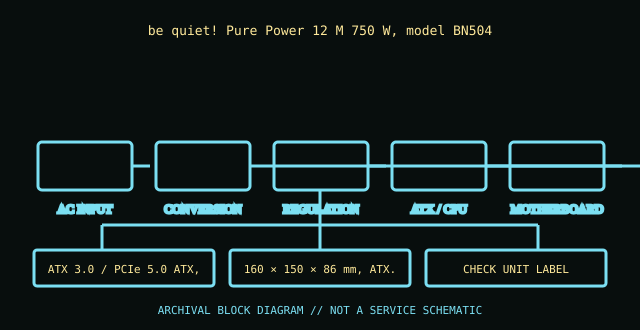

[ POWER CONVERSION // IDENTIFIED MODEL ]
be quiet! Pure Power 12 M 750 W (BN504)
be quiet! Pure Power 12 M 750 W, model BN504. This record is bounded to the named unit, standard revision, or model family below; nearby model names and replacement parts are not presumed equivalent.

HIGH-VOLTAGE SAFETY: Unplug before external inspection. Never open a power supply. Dangerous voltage can remain inside after it is disconnected. Do not attempt internal repair; use qualified service or replace the unit.
Verified identity & specifications
| Catalog identity | be quiet! Pure Power 12 M 750 W, model BN504 |
|---|---|
| Form factor / era | ATX 3.0 / PCIe 5.0 ATX, 750 W |
| AC input | 100–240 V AC, 50/60 Hz (model label controls). |
| DC output rating | 750 W continuous; +12 V combined up to 62.5 A; minor-rail limits and cross-load limits are manual-specific. |
| Mechanical envelope | 160 × 150 × 86 mm, ATX. |
| Connectors / interface | Modular 24-pin ATX, EPS/CPU, PCIe, SATA and peripheral; the BN504 bundle has a 12VHPWR-era GPU lead—verify its manual and compatible GPU instructions. |
| Revision differences | BN504 identifies the 750 W generation; successor Pure Power 12 M ATX 3.1 variants and later cables may differ. Do not collapse wattage/SKU variants into one record. |
Compatibility & safe handling
- Match full model, suffix, region, revision and DC output label to the official documentation. Rated total watts alone do not establish rail or transient compatibility.
- Before replacement, confirm AC input range, rail current/combined limits, motherboard signaling and pinout, mechanical envelope, fasteners, cooling direction, and every required connector.
- Never open the PSU, defeat protective earth, or probe its internals. Do not energize a wet, cracked, corroded, burned, modified, or unidentified supply.
- Modular cable pinouts are not standardized at the PSU end. Use only cables expressly approved for this exact model/revision; matching plugs can have different wiring.
Model and revision notes
BN504 identifies the 750 W generation; successor Pure Power 12 M ATX 3.1 variants and later cables may differ. Do not collapse wattage/SKU variants into one record.
be quiet! BN504 manufacturer product page and downloadable manual; verify the region/SKU suffix on the chassis label.
Archival notes
Keep BN504 model number and cable set together. Record any later retail revision, connector designation (12VHPWR versus 12V-2x6), and manual issue date.
Photograph the complete nameplate, assembly/model code, revision/date code, input selector if present, cable ends and mounting side. Separate observed label data from published specifications and preserve the referenced manual issue.
Manufacturer / standards references
- be quiet! BN504 manufacturer product page and downloadable manualbe quiet! BN504 manufacturer product page and downloadable manual; verify the region/SKU suffix on the chassis label.
- Intel — ATX / ATX12V Power Supply Design GuideStandards reference for the ATX electrical/mechanical family; use the revision specified for the product. Historical IBM supplies are not ATX and must not be adapted on this basis.
The exact nameplate and corresponding manufacturer manual remain controlling for regional and hardware revisions.